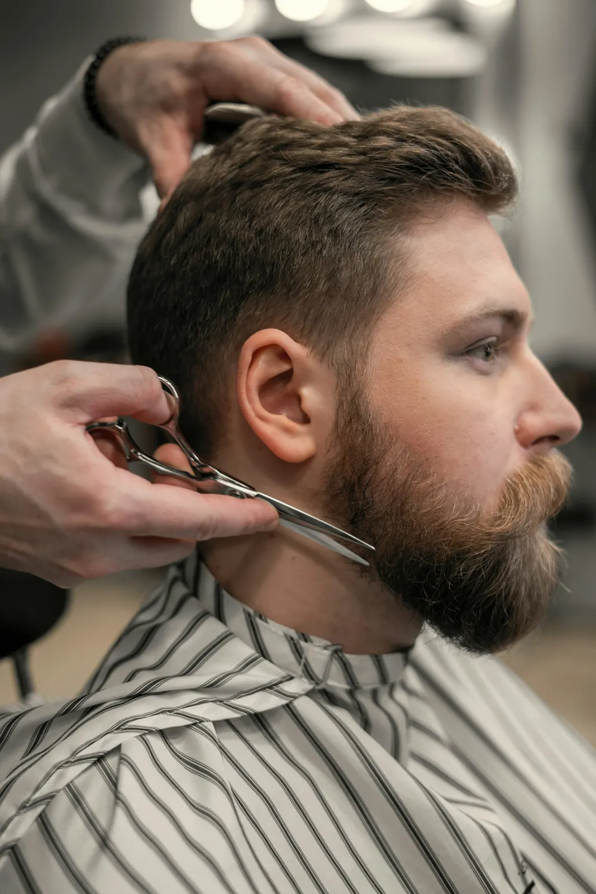
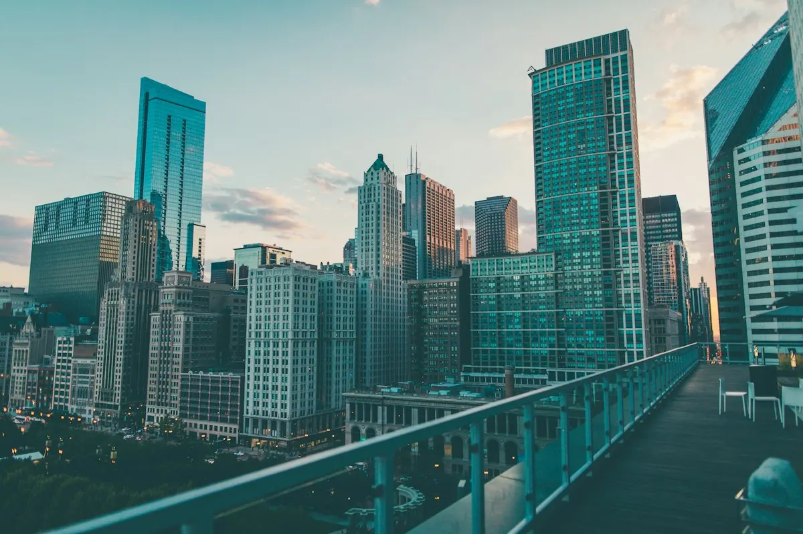
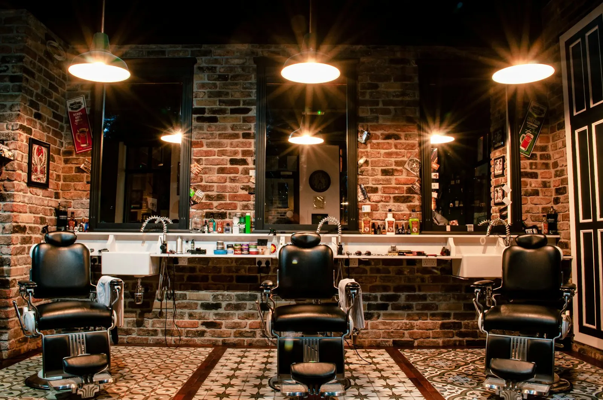
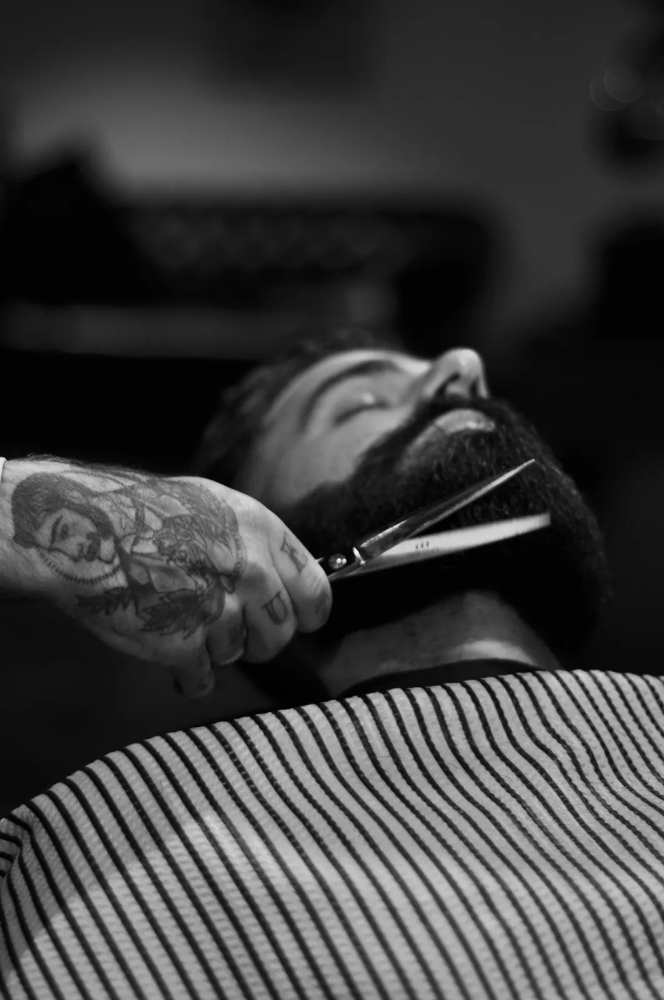
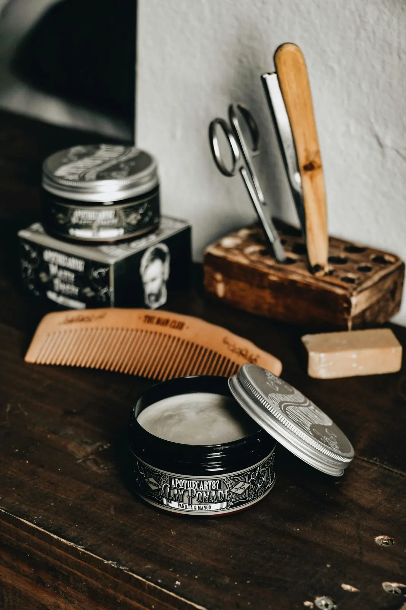
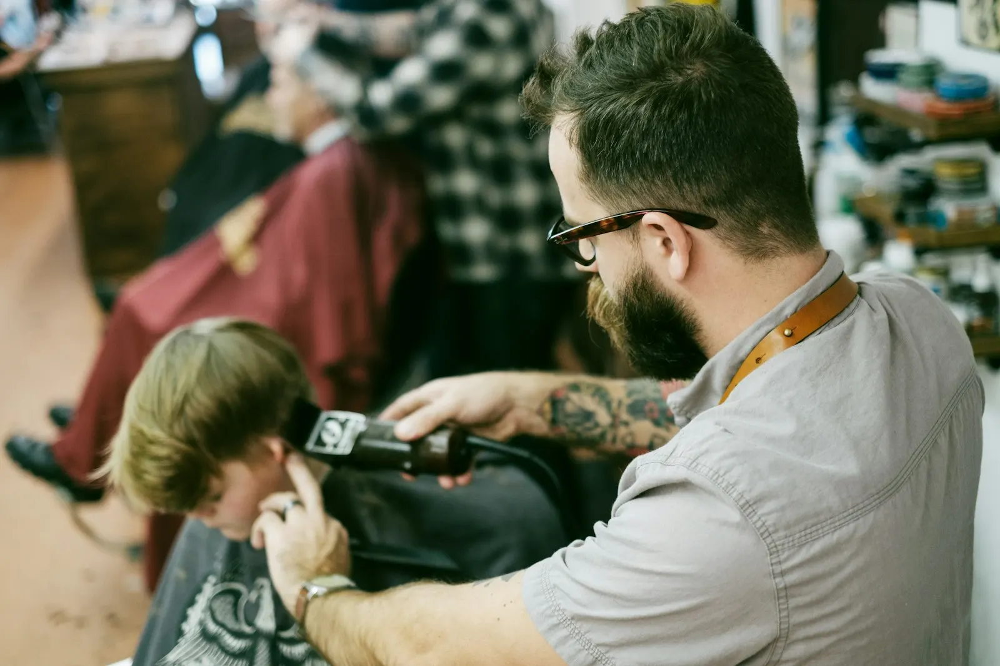

Strak in de nek, scherp in de lijnen.
Bij Kapsalon Istanbul stap je binnen voor een verse coupe en een verzorgde baard. Zes dagen per week open, op vrijdag en zaterdag zelfs tot 20 uur.

316 reviews op Google


Je coupe zoals jij ze wil
Zeg gerust wat je in gedachten hebt, of toon een foto op je gsm. Hoe duidelijker, hoe beter het resultaat.
Knippen
Kort opgeschoren, met een fade of net klassiek. We werken de zijkanten en de nek strak af, zodat het er ook na een paar dagen nog verzorgd uitziet.
Baard
Bijwerken, in vorm brengen en de lijnen netjes zetten. Je baard krijgt dezelfde aandacht als je haar.
Afwerking
Wax, gel of gewoon naturel: je gaat buiten met je haar zoals je het graag ziet.
“Best barber in town!”
Google-review
316 reviews op Google
“Top service !”
Google-review“Perfect! :)”
Google-reviewEven zitten, fris buiten
Een stoel, een spiegel en iemand die zijn vak kent. Meer heb je niet nodig voor een goede knipbeurt.




Wanneer kan je langskomen?
Twijfel je of er plaats is? Bel of stuur even een berichtje.